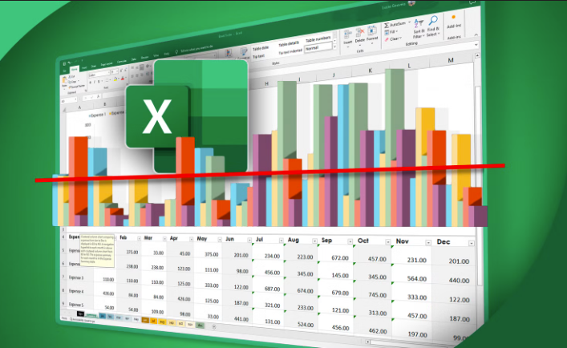

Datu apstrāde un analīze: Microsoft Excel
Darbs ar izklājlapām (Excel) ir viena no svarīgākajām prasmēm datu apstrādē. Stundu laikā mācījos izmantot dažādas matemātiskās un loģiskās formulas, apstrādāt lielus datu apjomus, kā arī vizualizēt iegūtos rezultātus, veidojot pārskatāmas un precīzas diagrammas un grafikus.
